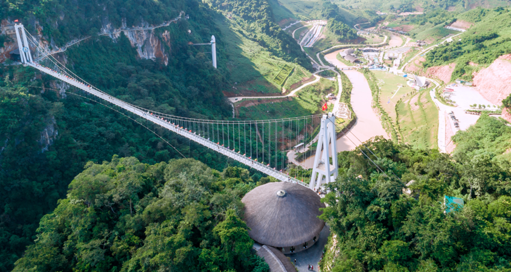

Ngày 1: HÀ NỘI – MỘC CHÂU | Đèo Đá Trắng – Cầu kính Bạch Long – Khu phố Nhật Bản
• Xe và hướng dẫn viên Ocean Trip đón Quý khách tại điểm hẹn, khởi hành đi Mộc Châu (khoảng 200km – 4 tiếng rưỡi).
• Trên đường, dừng chân chụp ảnh tại đèo Thung Khe – còn gọi là “Đèo Đá Trắng”, quanh năm sương phủ và đá trắng như tuyết, cực kỳ thu hút các tín đồ “sống ảo”.
• Quý khách dùng bữa trưa tại nhà hàng địa phương, nghỉ ngơi một chút rồi tiếp tục hành trình.
Trải nghiệm nổi bật buổi chiều:
• Khám phá Mộc Châu Island – Tổ hợp vui chơi, nghỉ dưỡng lớn nhất vùng núi Tây Bắc. Quý khách có thể:
o Tham quan cầu kính Bạch Long dài nhất thế giới, treo mình trên độ cao 150m.
o Trải nghiệm các trò chơi hấp dẫn: trượt Airslide, zipline, không gian 3D Mộc Châu Space... (Chi phí tự túc)

• Dùng bữa tối tại Tabamboo – Nhà hàng tre lớn nhất Việt Nam, vừa thưởng thức ẩm thực vừa thư giãn trong không gian tre độc đáo.
• Xe đưa Quý khách ghé Khu phố Nhật Bản tại Mộc Châu (cách 8,4km – khoảng 20 phút).
o Tự do khám phá các không gian đậm chất Nhật: quảng trường, trà đạo, Sakura Café, hoặc tham gia các hoạt động tại phố đi bộ cuối tuần.
• Xe đưa Quý khách về khách sạn nghỉ ngơi.
Nghỉ đêm tại Mộc Châu
Ngày 2: MỘC CHÂU – TÀ XÙA | Thung lũng mận – Mỏm Cá Heo – Thảo nguyên Tà Xùa
• Quý khách dùng bữa sáng, làm thủ tục trả phòng.
• Khởi hành đi Thung lũng Nà Ka (cách 19km – khoảng 35 phút).
o Chiêm ngưỡng những vườn mận trải dài hút mắt, tùy mùa còn cóhoa mận, hoa đào, mùa hồng, mùa quả chín...
o Quý khách có thể tự tay hái mận, chụp ảnh “check-in” giữa thiên nhiên trong lành (tùy mùa).
• Lên đường đi Tà Xùa (~102–150km – 3h30 đến 4h).
• Đến nơi, nghỉ ngơi và dùng bữa trưa tại nhà hàng địa phương.
Buổi chiều:
• Xe đưa Quý khách khám phá:
o Mỏm Cá Heo – Đầu Rùa: điểm đến “đỉnh cao” săn mây và chụp ảnh với những phiến đá độc đáo.
o Thảo nguyên Tà Xùa: thiên nhiên hoang sơ, những đồng cỏ xanh biếc, đàn trâu rừng thảnh thơi gặm cỏ – điểm đến cực chill.
o Quý khách có thể thưởng thức ly café ấm nóng giữa chiều hoàng hôn nơi rừng núi (chi phí tự túc).
• Ăn tối với các món đặc sản vùng cao, nhận phòng nghỉ ngơi. Nghỉ đêm tại Tà Xùa hoặc Bắc Yên
Ngày 3: TÀ XÙA – PHÚ THỌ | Sống lưng khủng long – Trải nghiệm bản địa
• Dậy sớm săn mây! Xe đưa Quý khách lên đỉnh Tà Xùa – nơi ngắm bình minh, săn mây đẹp nhất Tây Bắc, dễ đi, không quá mất sức.
• Tự do khám phá:
o Sống lưng khủng long – một con đường nhỏ hẹp nhô ra giữa trời cao, hai bên là vực sâu, cực kỳ ngoạn mục.
Quý khách có thể đi trekking nhẹ khoảng 1,5km, hoặcthuê xe ôm bản địa nếu mệt.
Những ai không leo có thể ngắm cảnh, uống café săn mây (chi phí tự túc).
• Quay về dùng bữa sáng tại nhà hàng địa phương, nghỉ ngơi – sau đó trả phòng.
• Di chuyển về Phú Thọ (khoảng 56km – 1h40p).
o Dùng bữa trưa bên Hồ Suối Chiếu – nơi phong cảnh nên thơ như bức tranh thủy mặc.
Buổi chiều:
• Đến nơi, nhận phòng và tham gia các hoạt động trải nghiệm:
o Làm bánh sắn truyền thống cùng người dân địa phương.
o Thưởng thức các món dân dã như cá suối, cơm lam, gà đồi…
o Giao lưu văn nghệ tại nhà hát Cánh Diều – Long Cốc Ecolodge
Nghỉ đêm tại Long Cốc Ecolodge hoặc tương đương
Ngày 3: PHÚ THỌ – HÀ NỘI | Đồi chè Long Cốc – Đặc sản thịt chua Đất Tổ
• Quý khách có thể dậy sớm săn bình minh tại đồi chè Long Cốc – nơi được ví như “tiên cảnh giữa đời thực” với sương mù mờ ảo và những ốc đảo chè xanh mướt.
Dùng bữa sáng, tự do khám phá thêm các cọn nước truyền thống hoặc check-in giữa thiên nhiên thanh bình.
• Trả phòng và ăn trưa tại nhà hàng địa phương.
• Trên đường về Hà Nội, đoàn dừng chân tham quan nhà máy thịt chua – đặc sản OCOOP của người Mường, thưởng thức miễn phí.
• Về đến Hà Nội (khoảng 125km – 2 tiếng).
Kết thúc hành trình. Ocean Trip chào tạm biệt và hẹn gặp lại Quý khách trong những chuyến đi sau.